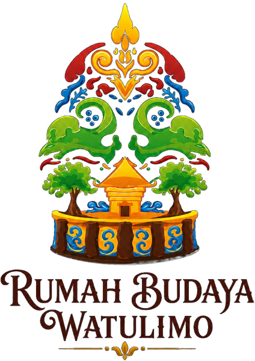
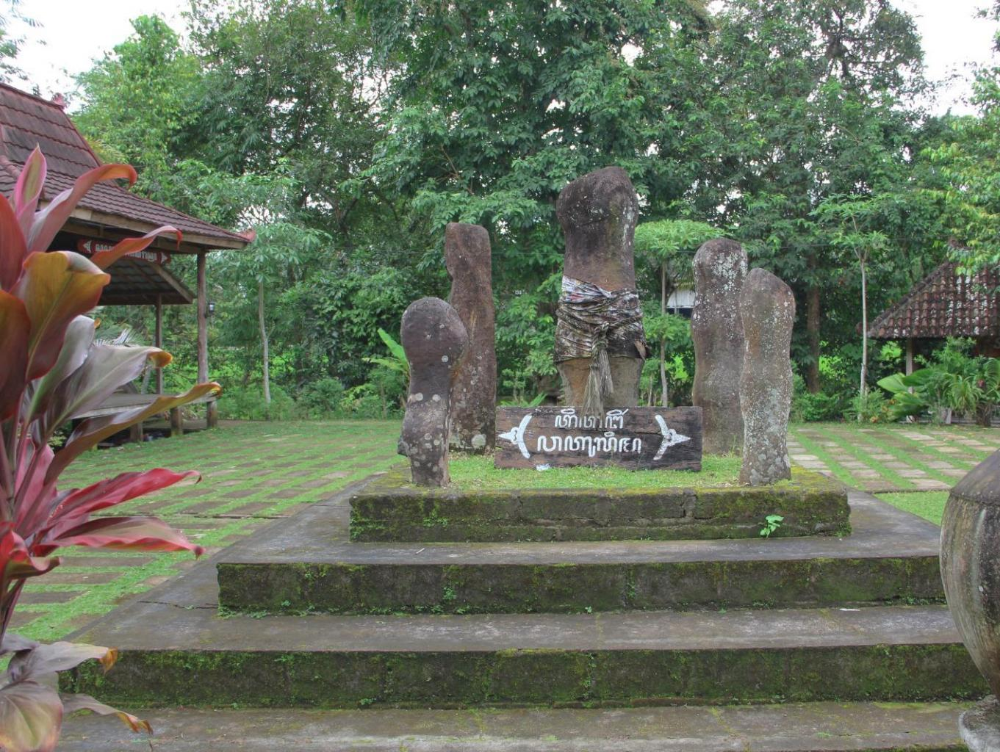

Rumah Budaya Watulimo
Rumah Budaya Watulimo merupakan pusat pelestarian dan pengembangan seni budaya di Desa Watulimo, Trenggalek.

Rumah Budaya Watulimo didirikan sebagai episentrum pelestarian kesenian pesisir Trenggalek. Kami percaya bahwa tradisi bukanlah benda mati di etalase, melainkan denyut kehidupan yang berkembang bersama zaman.
Menjadi mercusuar kebudayaan Jawa pesisiran yang diakui secara internasional dengan melestarikan tradisi melalui teknologi inovasi.
Menyelenggarakan pelatihan tari, pedalangan, karawitan, jaranan, serta melakukan digitalisasi manuskrip kuno demi generasi penerus.

Terletak di antara perbukitan selatan Trenggalek yang terjal dan Samudra Hindia, Watulimo adalah tanah penuh legenda. Namanya yang berarti 'lima batu', merujuk pada formasi batuan kuno pembatas mistis kerajaan Jawa.
Secara historis merupakan tempat perlindungan bagi prajurit Pangeran Diponegoro, wilayah ini berkembang menjadi wadah peleburan budaya di mana pengaruh pesisir bertemu dengan keraton Yogyakarta dan Surakarta, melahirkan kesenian unik seperti Jaranan Turonggo Yakso.
Rekam jejak pelestarian tradisi dari pendopo kayu sederhana hingga pusat warisan budaya diakui kancah nasional.
Bagan interaktif kepengurusan Rumah Budaya Watulimo
Detail dedikasi, kontribusi, dan biografi tokoh adat rumah budaya
10 Bidang pendidikan tradisi adiluhung Rumah Budaya Watulimo
Ikuti lokakarya tradisi, ritual adat bersih desa, dan pentas jaranan
Dedikasi puluhan tahun melestarikan kebudayaan Trenggalek di kancah nasional
Kunjungi Rumah Budaya Watulimo di Trenggalek atau daftarkan diri Anda sebagai siswa/cantrik
Jl. Raya Bandung Prigi Rumah Budaya Watulimo, QPG8+C3J, Watulimo, Kec. Watulimo, Kabupaten Trenggalek, Jawa Timur 66382, Indonesia
Sudewo (+62 813-3130-6689)
Andri (+62 858-9546-5155)
Senin - Minggu (Buka Setiap Hari)
08.00 - 16.00 WIB